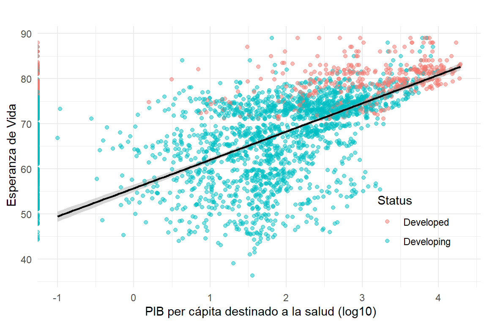
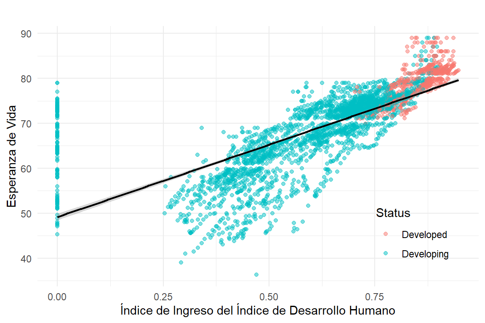

Tenemos un conjunto de datos que contiene información sobre la esperanza de vida en diferentes países y años. El conjunto de datos incluye las siguientes variables:
Variable
Descripción
Country
Categórica (\(193\)). Nombre del País.
Year
Númerica Discreta (\(2000-2015\)). Año.
Status
Categórica (\(2\)). Estado de Desarrollo del País.
Life_expectancy
Numérica Continua (\(6.30-89\)). Esperanza de Vida.
Adult_Mortality
Numérica Discreta (\(1-723\)). Tasa de Mortalidad en personas de 15 a 60 años por cada 1000 habitantes (ambos sexos).
infant_deaths
Numérica Discreta (\(1-1800\)). Tasa de Mortalidad infantil por cada 1000 habitantes.
Alcohol
Numérica Continua (\(0.01-17.87\)). Consumo de alcohol puro en litros per capita en mayores de 15 años.
percentage_expenditure
Numérica Continua (\(0-19479.912\)). Proporción del Producto Interno Bruto (PIB) per cápita de un país que se destina al gasto en salud.
Hepatitis.B
Numérica Continua (\(1-99\)). Porcentaje de Inmunización a Hepatitis B en infantes de \(\leq1\) año.
Measles
Numérica Continua (\(0-360.2\)). Número de casos reportados de Rubeola por cada 1000 habitantes.
BMI
Númerica Continua (\(1-87.30\)). Promedio poblacional del Índice de Masa Corporal.
U05_deaths
Numérica Discreta (\(0-2500\)). Número de Muertes de Menores de 5 años por cada 1000 habitantes
Polio
Numérica Continua (\(3-99\)). Porcentaje de Inmunización a Polio en infantes de \(\leq1\) año.
Total_expenditure
Numérica Continua (\(0.370-17.600\)). Proporción del gasto total del gobierno que se destina a la salud.
Diphtheria
Numérica Continua (\(2-99\)). Porcentaje de Inmunización a Difteria, Tétanos y Tosferina en infantes de \(\leq1\) año.
HIV.AIDS
Númerica Continua (\(0.1-50.6\)). Tasa de mortalidad de niños menores de 1 año debido a VIH/SIDA
GDP
Númerica Continua (\(1.68-119172.74\)). Producto Interno Bruto per cápita en USD.
Population
Númerica Discreta (\(3.400(10)^1 -1.294(10)^9\)). Población del País.
thinness._1to19years
Numérica Continua (\(0.1-27.7\)). Proporción de delgadez entre niños y adolescentes de 10 a 19 años.
thinness_5to.years
Numérica Continua (\(0.1-28.6\)). Proporción de delgadez entre niños de 5 a 9 años.
Income_composition_of_resources
Numérica Continua (\(0.1-0.948\)). Índice de Desarrollo Humano en términos de la composición del ingreso de los recursos.
Schooling
Numérica Continua (\(0-20.7\)). Número de Años de Escolaridad.
Nota: Las variables categóricas tienen entre paréntesis el número de categorías que tienen. Las variables numéricas discretas tienen entre paréntesis el rango de su valor en los datos.
2.2 Análisis Exploratorio
Tenemos un total de 22 variables y 2938 observaciones. De estas tenemos 193 países distintos y 16 años de datos.
2.2.1 Resumen de los datos.
Click para ver el código
datasummary_skim(datos,title ="",fmt =2,output_options =list(kable_styling =list(full_width = F, position ="left")))
Tabla 1: Resumen de los datos
Unique
Missing Pct.
Mean
SD
Min
Median
Max
Histogram
Year
16
0
2007.52
4.61
2000.00
2008.00
2.015000e+03
Life_expectancy
363
0
69.22
9.52
36.30
72.10
8.900000e+01
Adult_Mortality
426
0
164.80
124.29
1.00
144.00
7.230000e+02
infant_deaths
209
0
30.30
117.93
0.00
3.00
1.800000e+03
Alcohol
1077
7
4.60
4.05
0.01
3.76
1.787000e+01
percentage_expenditure
2328
0
738.25
1987.91
0.00
64.91
1.947991e+04
Hepatitis.B
88
19
80.94
25.07
1.00
92.00
9.900000e+01
Measles
958
0
2419.59
11467.27
0.00
17.00
2.121830e+05
BMI
609
1
38.32
20.04
1.00
43.50
8.730000e+01
U05_deaths
252
0
42.04
160.45
0.00
4.00
2.500000e+03
Polio
74
1
82.55
23.43
3.00
93.00
9.900000e+01
Total_expenditure
819
8
5.94
2.50
0.37
5.76
1.760000e+01
Diphtheria
82
1
82.32
23.72
2.00
93.00
9.900000e+01
HIV.AIDS
200
0
1.74
5.08
0.10
0.10
5.060000e+01
GDP
2491
15
7483.16
14270.17
1.68
1766.95
1.191727e+05
Population
2279
22
12753375.12
61012096.51
34.00
1386542.00
1.293859e+09
thinness._1to19years
201
1
4.84
4.42
0.10
3.30
2.770000e+01
thinness_5to.years
208
1
4.87
4.51
0.10
3.30
2.860000e+01
Income_composition_of_resources
626
6
0.63
0.21
0.00
0.68
9.500000e-01
Schooling
174
6
11.99
3.36
0.00
12.30
2.070000e+01
Status
N
%
Developed
512
17.43
Developing
2426
82.57
2.2.2 Correlación entre variables.
Click para ver el código
# Solo numericascorr_datos <- datos %>%select(-Country, -Status) %>%drop_na() %>%cor() %>%round(2) %>%as.data.frame() %>%rownames_to_column("Variable") %>%pivot_longer(cols =-Variable, names_to ="Variable2", values_to ="Correlacion")p <-ggplot(corr_datos, aes(x = Variable, y = Variable2, fill = Correlacion)) +geom_tile() +scale_fill_gradient2(low ="blue", mid ="white", high ="red", midpoint =0, limit =c(-1, 1), name ="Correlación") +theme_minimal() +labs(title ="",x ="",y ="") +theme(axis.text.x =element_text(angle =65, hjust =1))ggplotly(p)
Figura 1: Correlación entre variables numéricas.
2.2.3 Visualización de Datos.
Veremos la relación de las variables con la esperanza de vida. Para esto, graficaremos la esperanza de vida contra cada una de las variables numéricas y categóricas.
Click para ver el código
datos %>%ggplot(aes(x = Status, y = Life_expectancy)) +geom_violin( aes(fill = Status), alpha =0.45) +geom_boxplot(alpha =0.25, width =0.1, outlier.color ="red") +labs(title ="",x ="Estado de Desarrollo",y ="Esperanza de Vida",fill ="Estado de Desarrollo" ) +guides(fill = F) +theme_minimal() datos %>%ggplot(aes(x =as.factor(Year), y = Life_expectancy)) +geom_violin( aes(fill =as.factor(Year)), alpha =0.45) +geom_boxplot(alpha =0.25, width =0.1, outlier.color ="red") +labs(title ="",x ="Año",y ="Esperanza de Vida",fill ="Año" ) +guides(fill = F) +theme_minimal()datos %>%ggplot(aes(x = Adult_Mortality, y = Life_expectancy, colour = Status)) +geom_point(alpha =0.5) +geom_smooth(method ="lm", color ="black", se = T, linewidth =0.75) +labs(title ="",x ="Tasa de Mortalidad en Adultos",y ="Esperanza de Vida") +theme_minimal() +theme(legend.position =c(0.8, 0.95))datos %>%ggplot(aes(x = infant_deaths, y = Life_expectancy, colour = Status)) +geom_point(alpha =0.5) +geom_smooth(method ="lm", color ="black", se = T, linewidth =0.75) +labs(title ="",x ="Tasa de Mortalidad Infantil",y ="Esperanza de Vida") +theme_minimal() +theme(legend.position =c(0.8, 0.95))datos %>%ggplot(aes(x = Alcohol, y = Life_expectancy, colour = Status)) +geom_point(alpha =0.5) +geom_smooth(method ="lm", color ="black", se = T, linewidth =0.75) +labs(title ="",x ="Consumo de Alcohol",y ="Esperanza de Vida") +theme_minimal() +theme(legend.position =c(0.85, 0.25))datos %>%ggplot(aes(x =log(percentage_expenditure), y = Life_expectancy, colour = Status)) +geom_point(alpha =0.5) +geom_smooth(method ="lm", color ="black", se = T, linewidth =0.75) +labs(title ="",x =" PIB per cápita destinado a la salud (log)",y =" Esperanza de Vida") +theme_minimal() +theme(legend.position =c(0.85, 0.25))
(a) Esperanza de Vida vs Estado de Desarrollo.
(b) Esperanza de Vida vs Año.
(c) Esperanza de Vida vs Tasa de Mortalidad en Adultos y Estado de Desarrollo.
(d) Esperanza de Vida vs Tasa de Mortalidad Infantil y Estado de Desarrollo.
(e) Esperanza de Vida vs Consumo de Alcohol y Estado de Desarrollo.

(f) Esperanza de Vida vs PIB per cápita destinado a la salud (log) y Estado de Desarrollo.
Figura 2: Relación de la Esperanza de Vida con otras variables (parte 1).
Click para ver el código
datos %>%ggplot(aes(x = Hepatitis.B, y = Life_expectancy, colour = Status)) +geom_point(alpha =0.5) +geom_smooth(method ="lm", color ="black", se = T, linewidth =0.75) +labs(title ="",x ="Porcentaje de Inmunización a Hepatitis B",y ="Esperanza de Vida") +theme_minimal()datos %>%ggplot(aes(x =log(Measles), y = Life_expectancy, colour = Status)) +geom_point(alpha =0.5) +geom_smooth(method ="lm", color ="black", se = T, linewidth =0.75) +labs(title ="",x ="Número de casos reportados de Rubeola (log)",y ="Esperanza de Vida") +theme_minimal()datos %>%ggplot(aes(x = BMI, y = Life_expectancy, colour = Status)) +geom_point(alpha =0.5) +geom_smooth(method ="lm", color ="black", se = T, linewidth =0.75) +labs(title ="",x ="Índice de Masa Corporal", y ="Esperanza de Vida") +theme_minimal() +theme(legend.position =c(0.85, 0.25))datos %>%ggplot(aes(x =log(U05_deaths), y = Life_expectancy, colour = Status)) +geom_point(alpha =0.5) +geom_smooth(method ="lm", color ="black", se = T, linewidth =0.75) +labs(title ="",x ="Número de Muertes de Menores de 5 años (log)",y ="Esperanza de Vida") +theme_minimal() +theme(legend.position =c(0.85, 0.93))datos %>%ggplot(aes(x = Polio, y = Life_expectancy, colour = Status)) +geom_point(alpha =0.5) +geom_smooth(method ="lm", color ="black", se = T, linewidth =0.75) +labs(title ="",x ="Porcentaje de Inmunización a Polio",y ="Esperanza de Vida") +theme_minimal() +theme(legend.position =c(0.3, 0.95))datos %>%ggplot(aes(x = Total_expenditure, y = Life_expectancy, colour = Status)) +geom_point(alpha =0.5) +geom_smooth(method ="lm", color ="black", se = T, linewidth =0.75) +labs(title ="",x ="Proporción del gasto total del gobierno que se destina a la salud",y ="Esperanza de Vida") +theme_minimal()
(a) Esperanza de Vida vs Immunización a Hepatitis B y Estado de Desarrollo.
(b) Esperanza de Vida vs Número de casos reportados de Rubeola (log) y Estado de Desarrollo.
(c) Esperanza de Vida vs Índice de Masa Corporal y Estado de Desarrollo.
(d) Esperanza de Vida vs Número de Muertes de Menores de 5 años (log) y Estado de Desarrollo.
(e) Esperanza de Vida vs Inmunización a Polio y Estado de Desarrollo.
(f) Esperanza de Vida vs Proporción del gasto total del gobierno que se destina a la salud y Estado de Desarrollo.
Figura 3: Relación de la Esperanza de Vida con otras variables (parte 2).
Click para ver el código
datos %>%ggplot(aes(x = Diphtheria, y = Life_expectancy, colour = Status)) +geom_point(alpha =0.5) +geom_smooth(method ="lm", color ="black", se = T, linewidth =0.75) +labs(title ="",x ="Porcentaje de Inmunización a Difteria, Tétanos y Tosferina",y ="Esperanza de Vida") +theme_minimal() +theme(legend.position =c(0.35, 0.95))datos %>%ggplot(aes(x = HIV.AIDS, y = Life_expectancy, colour = Status)) +geom_point(alpha =0.5) +geom_smooth(method ="lm", color ="black", se = T, linewidth =0.75) +labs(title ="",x ="Tasa de mortalidad de niños menores de 1 año debido a VIH/SIDA",y ="Esperanza de Vida") +theme_minimal() +theme(legend.position =c(0.85, 0.95))datos %>%ggplot(aes(x =log10(GDP), y = Life_expectancy, colour = Status)) +geom_point(alpha =0.5) +geom_smooth(method ="lm", color ="black", se = T, linewidth =0.75) +labs(title ="",x ="Producto Interno Bruto per cápita en USD (log10)",y ="Esperanza de Vida") +theme_minimal() +theme(legend.position =c(0.85, 0.15))datos %>%ggplot(aes(x =log10(Population), y = Life_expectancy, colour = Status)) +geom_point(alpha =0.5) +geom_smooth(method ="lm", color ="black", se = T, linewidth =0.75) +labs(title ="",x ="Población del País (log10)",y ="Esperanza de Vida") +theme_minimal() +theme(legend.position =c(0.1, 0.15))datos %>%ggplot(aes(x = thinness._1to19years, y = Life_expectancy, colour = Status)) +geom_point(alpha =0.5) +geom_smooth(method ="lm", color ="black", se = T, linewidth =0.75) +labs(title ="",x ="Proporción de delgadez entre niños y adolescentes de 10 a 19 años",y ="Esperanza de Vida") +theme_minimal() +theme(legend.position =c(0.85, 0.9))datos %>%ggplot(aes(x = thinness_5to.years, y = Life_expectancy, colour = Status)) +geom_point(alpha =0.5) +geom_smooth(method ="lm", color ="black", se = T, linewidth =0.75) +labs(title ="",x ="Proporción de delgadez entre niños de 5 a 9 años",y ="Esperanza de Vida") +theme_minimal() +theme(legend.position =c(0.85, 0.9))datos %>%ggplot(aes(x = Income_composition_of_resources, y = Life_expectancy, colour = Status)) +geom_point(alpha =0.5) +geom_smooth(method ="lm", color ="black", se = T, linewidth =0.75) +labs(title ="",x ="Índice de Desarrollo Humano",y ="Esperanza de Vida") +theme_minimal() +theme(legend.position =c(0.85, 0.2))datos %>%ggplot(aes(x = Schooling, y = Life_expectancy, colour = Status)) +geom_point(alpha =0.5) +geom_smooth(method ="lm", color ="black", se = T, linewidth =0.75) +labs(title ="",x ="Número de Años de Escolaridad",y ="Esperanza de Vida") +theme_minimal() +theme(legend.position =c(0.85, 0.2))
(a) Esperanza de Vida vs Inmunización a Difteria, Tétanos y Tosferina y Estado de Desarrollo.
(b) Esperanza de Vida vs Tasa de mortalidad de niños menores de 1 año debido a VIH/SIDA y Estado de Desarrollo.
(c) Esperanza de Vida vs PIB per cápita (log) y Estado de Desarrollo.
(d) Esperanza de Vida vs Población del País (log) y Estado de Desarrollo.
(e) Esperanza de Vida vs Proporción de delgadez entre niños y adolescentes de 10 a 19 años y Estado de Desarrollo.
(f) Esperanza de Vida vs Proporción de delgadez entre niños de 5 a 9 años y Estado de Desarrollo.

(g) Esperanza de Vida vs Índice de Desarrollo Humano y Estado de Desarrollo.
(h) Esperanza de Vida vs Número de Años de Escolaridad y Estado de Desarrollo.
Figura 4: Relación de la Esperanza de Vida con otras variables (parte 3).
2.2.4 Datos Faltantes.
Click para ver el código
faltantes_df <- datos %>%summarise(across(everything(), ~sum(is.na(.)))) %>%pivot_longer(cols =everything(), names_to ="Variable", values_to ="Faltantes") %>%mutate(Variable =factor(Variable, levels =names(datos)))p <-ggplot(faltantes_df, aes(x = Variable, y = Faltantes)) +geom_bar(stat ="identity", fill ="steelblue") +coord_flip() +labs(title ="",x ="",y ="Número de Datos Faltantes") +theme_minimal()ggplotly(p)
Figura 5: Datos Faltantes por Variable
Click para ver el código
# Porcentaje de datos faltantesfaltantes_df <- datos %>%summarise(across(everything(), ~sum(is.na(.)))) %>%pivot_longer(cols =everything(), names_to ="Variable", values_to ="Faltantes") %>%mutate(Variable =factor(Variable, levels =names(datos)),Porcentaje = (Faltantes /nrow(datos)) *100)p <-ggplot(faltantes_df, aes(x = Variable, y = Porcentaje)) +geom_bar(stat ="identity", fill ="steelblue") +geom_hline(yintercept =15, color ="red", linetype ="dashed") +coord_flip() +labs(title ="",x ="",y ="Porcentaje de Datos Faltantes") +theme_minimal()ggplotly(p)
Figura 6: Porcentaje de Datos Faltantes por Variable